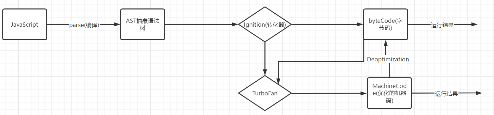
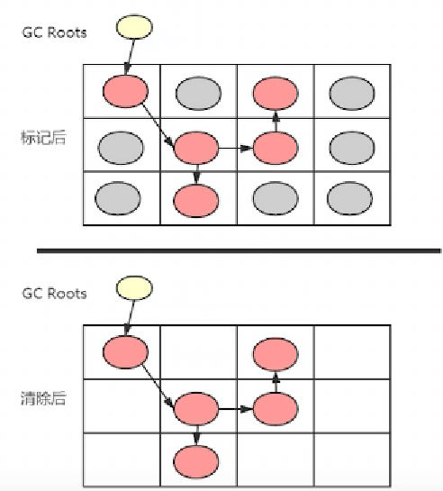
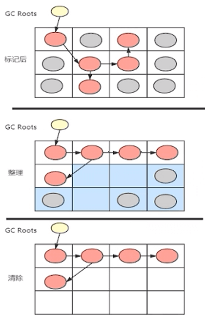

V8引擎
V8引擎原理
V8是用C++编写的Googl开源高性能JavaScript和WebAssembly引擎，它也用于Chrome和Node.js等
V8的解析js的流程

- js直接放到cpu中无法执行，需要通过v8转换
- js先被转换成ast语法树，在此期间主要是进行词法分析和语法分析
- ast语法树通过Ignition库被转换成字节码
- v8会将字节码转换成汇编语言，汇编语言再转换成不同环境对应的指令
不直接转换成机器码的原因：js代码跑在哪个环境是不一定的，不同的环境有不同的cpu，不同的cpu可能有不同的cpu架构，他们可以执行的机器指令可能是不一样的
字节码最大的好处：跨平台，不依赖于当前处于哪个环境
v8将字节码转换成不同环境指令的过程中，如果某些代码会被重复使用，那么重复的转换过程还是会浪费性能
例如下面的函数被多次调用，那么它它会被TurboFan转换成对应环境的机器码
1 | function sum(n1, n2) { |
TurboFan会将多次使用的代码直接转换成对应环境的机器码，之后用的时候就不需要反复转换了
但是也有特殊情况，例如上述函数被使用了三次，分别是
1 | sum(1, 2) |
那么在前面基础上转换成的机器码是无法执行传入参数为字符串的sum函数的，这个时候就会有deoptimization（反向优化）操作，就是将机器码又转换成字节码
在多次使用某个函数时，尽量传入相同类型的函数。所以ts在某种程度上允许时比js效率稍微高一点
Igniton
Igniton是一个解释器，将AST转换成字节码
- 同时会收集TurboFan优化所需的信息（例如函数参数的类型）
TurboFan
TurboFan是一个编译器，将字节码编译为CPU可以直接执行的机器码
- 如果一个函数被多次调用，那么会被标记为热点函数，就会经过TurboFan转换成优化的机器码，提高代码的执行性能
- 当然，如果被优化的函数在后续出现了参数类型的变化，又会被逆向转换成字节码
Parse过程
Blink将源码交给v8引擎，Stream获取到源码并且进行编码转换
Scanner会进行词法分析，然后将代码转换成tokens。tokens又被转换成AST语法树
Parser是直接将tokens转成AST语法树
PreParser被称为预解析
预解析的原因：并不是所有的JS代码，在一开始就会被执行，那么对所有的JS代码进行解析，必然会影响网页的运行效率
V8引擎实现了Lazy Parsing（延迟解析）的方案，它的作用是将不必要的函数进行预解析，也就是只解析暂时需要的内容，而对函数的全量解析是在函数被调用时才会进行
下面代码中的inner函数就会被预解析
1 | function outer() { |
GlobalObject对象
在Parse期间创建一个全局对象GlobalObject，将js中一些基本的对象和方法等放入到这个对象中（例如String、Date、console等）
这其中一个比较重要的属性是window属性，这个window又指向GlobalObject对象本身
同时在解析时会将自定义的一些全局变量等也添加到GlobalObject对象中，但是这些变量的值还没有被解析，也就是说变量的值现在还是undefined（作用域提升）
执行上下文栈（函数调用栈）
当代码被解析完成之后，就要执行代码。而为了执行代码，
- v8引擎内部会有一个执行上下文栈（Execution Context Stack）
- 要执行全局代码，需要创建全局执行上下文（全局代码需要被执行时才会创建），全局执行上下文中有一个vo（variable Object），它指向GlobalObject对象
- 将全局执行上下文压入到执行上下文栈中，然后开始执行代码。例如执行到
var name = 'cqy'，vo会在golbalObject中找到name属性，然后将它赋值为cqy
V8内存管理
程序运行需要分配内存
V8也会申请内存，这种内存叫做常驻内存集合
常驻内存集合又分为堆和栈
一般说的垃圾回收机制是针对堆内存来说的，栈的管理比较简单，执行的时候入栈，执行完了出栈
堆
如果不需要连续空间，或者申请的内存较大，可以使用堆
堆主要用于存储JS中的引用类型
堆的空间分类
新生代（new space）
新生代内存用于存放一些生命周期比较短的数据对象，新生代分为两部分，分别是对象区域（from）和空闲区域（to）老生代（old space）
老生代内存用于存放一些生命周期比较长的对象数据
当新生代的对象进行两个周期的垃圾回收后，如果数据还存在新生代中，则将他们存放到老生代中Code space
存放已经编译好的代码，唯一拥有执行权限的内存Large object space
为了避免大对象的拷贝，使用该空间专门存储大对象
GC不会回收这部分内存Map space
存放对象的Map信息，即隐藏类
隐藏类是为了提升对象属性的访问速度，V8会为每个对象创建一个隐藏类，记录对象的属性布局，包括所有的属性和偏移量
新生代和老生代的内存空间：
和操作系统有关，64位为1.4G，32位为0.7G
64位新生代空间位64MB，老生代为1400MB
32位新生代的空间为32MB，老生代为700MB
什么是垃圾：在程序运行过程中肯定会有一些数据，这些数据放在堆栈中，但是在程序运行结束后，这些数据就不会再被使用了，那么这些不再使用的数据就是垃圾
新生代垃圾回收
新生代内存使用Scavenger算法来管理内存
- 广度优先遍历from中的对象，从根出发，广度优先遍历所有能达到的对象，把存活的（能达到的）对象复制到to中
- 遍历完成后，清空from
- from和to角色互换
新生代为什么要采用复制的形式
新生代的这种算法有一个缺陷就是总有一半的空间是空闲的，其实是一种牺牲空间换时间的操作，复制一种相对简单的操作，可以有效降低时间复杂度
老生代垃圾回收
老生代垃圾回收在早期使用Mark-Sweep（标记清除）和mMark-Compact（标记整理）
老生代不使用Scavenger的原因：老生代的内存有1400MB，一半的空闲空间会导致牺牲的空间太多
Mark-Sweep
垃圾回收会有一个根节点（它不是window也不是global，如果是这两者，意味着任何变量都是可达的，就不存在垃圾了）
广度扫描，把和根节点有关联的变量进行标记。其余没有被标记的就是垃圾
当内存快要溢出时，这些垃圾就会被回收

Mark-Compact
标记整理就是在标记清除的基础上进行了整理操作，在清除垃圾之前对和根节点有关联的变量进行整理，使他们在一块连续的内存上
先整理再清除的好处：在整理时，因为要将可达变量都放在连续的内存上，那么原来在这部分内存上的垃圾就会被覆盖，清除垃圾时可以减少要清除的垃圾
